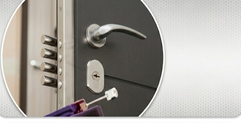
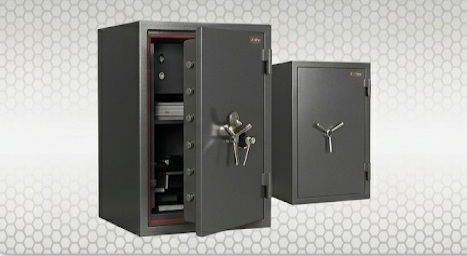
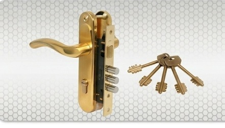

Що ми відкриваємо

Квартири та будинки
Відкриття вхідних, броньованих, металопластикових та міжкімнатних дверей. Заміна серцевини замка на місці.

Автомобілі
Акуратне розблокування дверей, багажників, капотів будь-яких марок авто. Якщо ключі залишились в салоні.

Сейфи
Делікатне відкриття сейфів (механічних та електронних), металевих шаф, банкоматів та поштових скриньок.

Ремонт та заміна
Врізка додаткових замків, заміна зламаних механізмів, ремонт дверей після дій зловмисників.